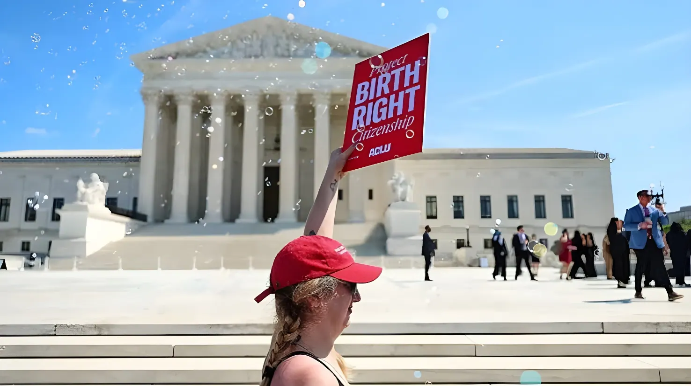

Battu en juin 2026 par une Cour suprême qui a jugé son décret de 2025 inconstitutionnel, Donald Trump n'a pas renoncé à son offensive contre la citoyenneté automatique. Le 6 août 2026, il a signé dans le Bureau ovale deux nouveaux décrets exécutifs, plus étroits dans leur formulation, visant à exclure certaines catégories d'enfants nés sur le sol américain du bénéfice du « birthright citizenship » et à durcir la lutte contre le « tourisme de naissance ». Une nouvelle manche s'ouvre ainsi dans la bataille juridique et politique la plus disputée du second mandat de Trump sur la définition constitutionnelle de la citoyenneté américaine.
Dès son premier jour de mandat, le 20 janvier 2025, Donald Trump avait signé le décret « Protecting the Meaning and Value of American Citizenship », qui prétendait priver de citoyenneté automatique les enfants nés aux États-Unis de parents en situation irrégulière ou en visa temporaire. Ce texte s'attaquait frontalement à l'interprétation du 14ᵉ amendement de la Constitution, qui garantit depuis 1868 la citoyenneté à toute personne née sur le sol américain et soumise à sa juridiction. Le décret n'est jamais entré en vigueur : tous les juges fédéraux saisis l'ont jugé, selon les mots de l'un d'eux, « manifestement inconstitutionnel », et plusieurs cours d'appel ont maintenu les blocages.
En juin 2025, la Cour suprême avait certes limité la portée des injonctions nationales prononcées par les juges de première instance dans l'affaire Trump v. CASA, une décision procédurale qui avait un temps semblé ouvrir une brèche. Mais des recours collectifs, dont Barbara v. Trump porté notamment par l'ACLU et le Legal Defense Fund, ont permis de maintenir une protection de facto pour l'ensemble des enfants concernés, en attendant que la Cour suprême tranche le fond du dossier.
Plaidée le 1ᵉʳ avril 2026 devant la Cour suprême, l'affaire Trump v. Barbara a été tranchée le 30 juin 2026 par six voix contre trois. Sous la plume du président de la Cour John Roberts — rejoint par la juge conservatrice Amy Coney Barrett —, la majorité a jugé que les enfants nés de parents en situation irrégulière ou en séjour temporaire « satisfont aux deux conditions de la clause de citoyenneté » du 14ᵉ amendement et sont donc citoyens dès leur naissance. La décision s'appuie explicitement sur le précédent de 1898, United States v. Wong Kim Ark, qui avait déjà consacré ce principe pour les enfants de résidents étrangers.
Six semaines après sa défaite, Trump a signé deux nouveaux textes, présentés par la Maison-Blanche comme des « ajustements » tenant compte de la décision de la Cour. Le premier, intitulé « Continuing to Protect the Meaning and Value of American Citizenship », vise à exclure du bénéfice de la citoyenneté automatique les enfants nés de personnel diplomatique étranger, de salariés d'organisations internationales comme l'ONU, de membres de groupes qualifiés d'organisations terroristes — dont Antifa et le gang vénézuélien Tren de Aragua — ainsi que, plus inédit, les enfants nés par gestation pour autrui de parents non-citoyens, une catégorie que ni le 14ᵉ amendement ni la jurisprudence n'avaient jusqu'ici mentionnée.
Le second décret, « Ending Birth Tourism », ordonne aux secrétaires d'État et à la Sécurité intérieure de refuser des visas à toute personne soupçonnée de vouloir accoucher aux États-Unis dans le seul but d'obtenir la nationalité pour son enfant, et cible en particulier les officines commerciales qui organisent ces séjours. Le texte accuse ces « opérateurs du tourisme de naissance » d'utiliser des publicités trompeuses, sans toutefois fournir de données précises sur l'ampleur réelle du phénomène — les estimations varient de moins de 10 000 à environ 70 000 naissances par an, selon les organismes, sur un total de 3,6 millions de naissances annuelles aux États-Unis.
Trump signe le décret « Protecting the Meaning and Value of American Citizenship », visant à mettre fin au birthright citizenship pour les enfants de parents sans papiers ou en visa temporaire.
Des juges fédéraux dans plusieurs États bloquent le décret, le qualifiant de « manifestement inconstitutionnel » ; plusieurs cours d'appel refusent de lever ces blocages.
La Cour suprême, dans Trump v. CASA, limite le pouvoir des juges de première instance à prononcer des injonctions à portée nationale — une décision procédurale, pas un jugement sur le fond.
L'affaire Trump v. Barbara, portée par l'ACLU et plusieurs organisations de défense des droits civiques, est plaidée devant la Cour suprême.
La Cour suprême tranche 6 voix contre 3 : le décret de janvier 2025 est inconstitutionnel, la citoyenneté par naissance reste garantie à tous les enfants nés sur le sol américain.
Le procureur général du Texas ouvre une enquête sur des hôpitaux du sud de l'État soupçonnés de faire la promotion de séjours d'accouchement destinés à des ressortissantes étrangères.
Trump signe deux nouveaux décrets, plus restreints : exclusion de catégories ciblées (diplomates, personnel d'organisations internationales, gestation pour autrui, groupes désignés terroristes) et durcissement visant le « tourisme de naissance ».
Les deux nouveaux décrets n'ont pas la même ambition que le texte de janvier 2025 : plutôt que de contester frontalement le principe du birthright citizenship, ils tentent de le grignoter par des exceptions ciblées, en pariant sur des catégories que la Cour suprême n'a pas explicitement examinées. Mais plusieurs de ces catégories posent déjà question aux juristes : comment l'administration prouvera-t-elle qu'un nouveau-né est lié à une organisation classée terroriste, quand ces groupes ne tiennent pas de listes de membres ? Et sur quelle base constitutionnelle exclure les enfants nés par gestation pour autrui, une question que ni le 14ᵉ amendement ni la jurisprudence Wong Kim Ark n'abordent ? Pour l'ACLU, la réponse ne fait guère de doute : « tout décret qui tente de réécrire le birthright citizenship connaîtra le même sort que le précédent ». De nouveaux recours sont déjà annoncés, et la question de savoir jusqu'où un président peut redéfinir par décret les contours d'un droit inscrit dans la Constitution depuis 1868 devrait, une nouvelle fois, se retrouver entre les mains des tribunaux fédéraux — voire, à terme, de la Cour suprême elle-même.
Defeated in June 2026 when the Supreme Court ruled his 2025 executive order unconstitutional, Donald Trump has not abandoned his campaign against automatic citizenship. On August 6, 2026, he signed two new, more narrowly drafted executive orders in the Oval Office, aiming to exclude certain categories of U.S.-born children from birthright citizenship and to crack down harder on "birth tourism." A new round has thus opened in the most contested legal and political battle of Trump's second term over the constitutional meaning of American citizenship.
On his very first day back in office, January 20, 2025, Donald Trump signed the executive order "Protecting the Meaning and Value of American Citizenship," which sought to deny automatic citizenship to children born in the U.S. to parents who were undocumented or on temporary visas. The order directly challenged the interpretation of the 14th Amendment, which has guaranteed citizenship to anyone born on U.S. soil and subject to its jurisdiction since 1868. The order never took effect: every federal judge who reviewed it found it, in the words of one, "blatantly unconstitutional," and multiple appeals courts kept the blocks in place.
In June 2025, the Supreme Court did limit the scope of nationwide injunctions issued by lower courts in Trump v. CASA — a procedural ruling that briefly appeared to open a path forward for the administration. But class-action lawsuits, including Barbara v. Trump brought by the ACLU and the Legal Defense Fund among others, kept de facto protection in place for affected children while the Supreme Court prepared to rule on the merits.
Argued before the Supreme Court on April 1, 2026, Trump v. Barbara was decided on June 30, 2026, by a 6-3 vote. Writing for the majority — joined by conservative Justice Amy Coney Barrett — Chief Justice John Roberts held that children born to parents unlawfully or temporarily present in the U.S. "satisfy both elements of the Citizenship Clause" of the 14th Amendment and are therefore citizens at birth. The ruling relied explicitly on the 1898 precedent United States v. Wong Kim Ark, which had already established the same principle for children of resident foreign nationals.
Six weeks after his defeat, Trump signed two new orders, described by the White House as "adjustments" made with the Court's ruling in mind. The first, titled "Continuing to Protect the Meaning and Value of American Citizenship," seeks to exclude from automatic citizenship children born to foreign diplomatic staff, employees of international organizations such as the United Nations, members of groups designated as terrorist organizations — including Antifa and the Venezuelan gang Tren de Aragua — and, in a novel move, children born via surrogacy to non-citizen parents, a category neither the 14th Amendment nor existing case law had previously addressed.
The second order, "Ending Birth Tourism," directs the Secretaries of State and Homeland Security to deny visas to anyone suspected of intending to give birth in the U.S. solely to obtain citizenship for their child, and specifically targets commercial operators that organize such trips. The order accuses these "birth tourism operators" of using deceptive advertising, without providing precise data on the scale of the practice — estimates range from under 10,000 to roughly 70,000 births a year, depending on the source, out of 3.6 million total U.S. births annually.
Trump signs "Protecting the Meaning and Value of American Citizenship," seeking to end birthright citizenship for children of undocumented or temporary-visa parents.
Federal judges in multiple states block the order, calling it "blatantly unconstitutional"; several appeals courts refuse to lift the blocks.
In Trump v. CASA, the Supreme Court limits lower courts' power to issue nationwide injunctions — a procedural ruling, not a decision on the merits.
Trump v. Barbara, brought by the ACLU and several civil rights organizations, is argued before the Supreme Court.
The Supreme Court rules 6-3: the January 2025 order is unconstitutional, and birthright citizenship remains guaranteed to all children born on U.S. soil.
The Texas attorney general opens an investigation into south Texas hospitals suspected of advertising birthing stays to foreign nationals.
Trump signs two new, narrower executive orders: targeted exclusions (diplomats, international-organization staff, surrogacy, designated terrorist groups) and a crackdown on "birth tourism."
The two new orders are less sweeping than the January 2025 text: rather than challenging the principle of birthright citizenship head-on, they try to chip away at it through targeted exceptions, betting on categories the Supreme Court has not explicitly examined. But several of these categories already raise questions among legal scholars: how will the administration prove a newborn is linked to a group designated as terrorist, when such groups keep no membership lists? And on what constitutional basis can children born via surrogacy be excluded, a question neither the 14th Amendment nor the Wong Kim Ark precedent addresses? For the ACLU, the answer seems clear: "any executive order that tries to rewrite birthright citizenship will meet the same fate as the last one." New legal challenges have already been announced, and the question of how far a president can redefine by decree a right enshrined in the Constitution since 1868 looks set, once again, to land in the hands of the federal courts — and possibly the Supreme Court itself.